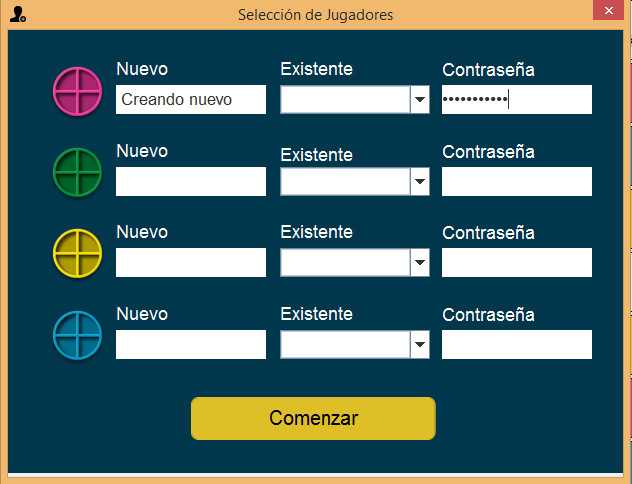

Selección de usuarios
A la hora de seleccionar usuarios, se presentan las siguientes opciones
- Si se desea crear un usuario nuevo, será necesario escribir nuestro “username” en el campo nuevo, además de incluir una contraseña, y mantener el campo existente vacío. Es necesario realizar esto la primera vez que se desee jugar con cierto nombre de usuario, luego el sistema se encargará de hacerlo figurar en la base de datos.

- Si por el contrario, ya disponemos de un usuario registrado, solamente tendremos que seleccionarlo en la pestaña “existente” e introducir la contraseña.

En este juego, podrán jugar un máximo de hasta 4 jugadores. Una vez seleccionados todos los jugadores, haremos click en el botón comenzar e iremos directos a la partida como tal.
Como jugar